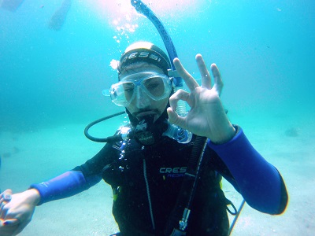

<html>
<head>
<title>MECANICA DE FLUIDOS, F025, fisica online, ejercicios resueltos</title>
<meta http-equiv="Content-Type" content="text/html; charset=UTF-8" />
<meta name="keywords" content="problemas resueltos, ejercicios resueltos, cbc, fisica, biofisica, fluidos, liquidos, gases, bernoulli, poiseuille, viscosidad, ideales, viscosos, humedad, difusion, osmosis, nomesalen, no me salen, ricardo cabrera" />
<meta name="description" content="Ejercicios y problemas resueltos, y apuntes teóricos de Fluidos, mecanismos de transporte de fluidos" />
<link rel="stylesheet" href="win_ie.css">
<style type="text/css">
<!--
.style1 {
	color: #3F6386;
	font-weight: bold;
}
.Estilo3 {color: #3F6386}
.Estilo16 {font-size: 16px}
.Estilo17 {font-size: 10px}
.Estilo18 {color: #FF0000}
.Estilo26 {font-family: "Times New Roman", Times, serif;
	font-weight: bold;
	font-style: italic;
	font-size: 16px;
}
-->
</style>
</head>

<body bgcolor="#FFFFFF" text="#000000" alink="#000000" leftmargin="0" topmargin="0" marginwidth="0" marginheight="0">
<table align=center width="600" border="0" cellspacing="0" cellpadding="0"> 
  <tr bgcolor="#000000" align="right"> 
<td></td></tr> <tr bgcolor="#BB0000" valign="middle" align="left"> 
<td class="bodytext" height="20"><TABLE WIDTH="100%" BORDER="0" CELLSPACING="0" CELLPADDING="0">
  <TR ALIGN="center" CLASS="menuitem">
    <TD WIDTH="43" height="19" CLASS="menuitem"><A HREF="../../index.html" CLASS="menuitem">&nbsp;<B>home</B>&nbsp;</A></TD>
    <TD WIDTH="5" CLASS="menuitem"><FONT COLOR="#000000">|</FONT></TD>
    <TD width="119" CLASS="menuitem"><strong><a href="index_hdinam.html" class="menuitem">más de hidrodinámica </a> </strong></TD>
    <TD width="9" CLASS="menuitem"><FONT COLOR="#000000">|</FONT></TD>
    <TD width="127" CLASS="menuitem"><strong><a href="../../intro_NMS.html" class="menuitem">otros temas de F&iacute;sica</a></strong></TD>
    <TD width="10" CLASS="menuitem"><FONT COLOR="#000000">|</FONT></TD>
    <TD width="160" CLASS="menuitem"><strong><a href="../../lista_ciruela.html" class="menuitem">lecciones del maestro Ciruela </a></strong></TD>
    <TD width="8" CLASS="menuitem"><FONT COLOR="#000000">|</FONT></TD>
    <TD width="67" CLASS="menuitem"><strong><a href="../../lista_tonterias.html" class="menuitem">tonter&iacute;as</a></strong></TD>
    <TD WIDTH="7" CLASS="menuitem"><a href="../energia/index_energia.html" class="menuitem"></a><FONT COLOR="#000000">|</FONT></TD>
    <TD WIDTH="48" CLASS="menuitem">&nbsp;<B><FONT FACE="Arial, Helvetica, sans-serif"><A HREF="mailto: ricuti@gmail.com" CLASS="menuitem">@</A></FONT><A HREF="../../index.html" CLASS="menuitem"></A></B>&nbsp;</TD>
  </TR>
</TABLE></td></tr> <tr> <td class="bodytext" height="19"><p></td></tr> 
<tr align="center"> <td height="2564"> <table width="600" border="0" cellspacing="0" cellpadding="0"> 
<tr class="bodytext"> <td colspan="2" valign="top" height="2525"> <p></td>
<td valign="top" width="594" height="2525"> 
<table width="589" border="0" cellspacing="0" cellpadding="0"> <tr> 
  <td height="74" colspan="2" bgcolor="#D7FFFF" class="bodytext"><span class="bodytext"><strong><em><strong><em><strong><strong>&#160; &#160;</strong></strong></em></strong></em>NO ME SALEN<br />
</strong></span><span class="Estilo3"><em class="bodytext "><strong><em><strong><em><strong><strong>&#160; &#160;</strong></strong></em></strong></em>(<strong>PROBLEMAS RESUELTOS   DE BIOF&Iacute;SICA DEL CBC</strong>)</strong></em></span><br />
      <span class="titulograndegris Estilo16"><strong><em><strong><em><strong><strong>&#160; &#160;</strong></strong></em></strong></em>FLUIDOS<br />
      </strong></span><br /> </td>
  <td class="bodytext" rowspan="5" height="74" width="7">&nbsp;</td>
  <td class="bodytext" height="74" rowspan="5" valign="top" width="86"> 
<p></p></td></tr>
  <tr>
    <td height="18" colspan="2" bgcolor="#FFFFFF" class="bodytext">&nbsp;</td>
  </tr> 
<tr> <td width="147" height="25" valign="top" class="bodytext"><p></P>
    </td>
  <td width="349" valign="top" class="bodytext"><p><strong>58-Buceo. Los cambios de volumen de un gas  según la presión a la que estén sometidos, se  manifiestan sobre los gases que se encuentran  en el interior de nuestro organismo. <br />
  </strong></p>    </td>
</tr>
<tr>
  <td height="145" colspan="2" valign="top" class="bodytext"><p><strong>En nuestro  cuerpo hay cavidades que contienen gases,  como el interior de los pulmones, senos paranasales, oído medio, gases disueltos en la sangre y  en los tejidos corporales. Estos gases pueden  cambiar su volumen de acuerdo a la presión a la  que nos encontremos.  El aire que respiramos en la superficie e introducimos en los pulmones, a medida que descendemos en el agua, se comprimirá y su volumen  se volverá progresivamente más pequeño.  <br>
   &nbsp;&nbsp;&nbsp; a) ¿A qué profundidad hay que sumergirse  para que el volumen del aire, introducido en los  pulmones en la superficie, se reduzca a la mitad?</strong></p>
    <p class="epigrafe"><strong>(Hay más preguntas que se van transcbiendo abajo)</strong></p></td>
  </tr>
<tr>
  <td height="25" colspan="2" valign="top" class="bodytext">&nbsp;</td>
  </tr>
<tr>
  <td height="686" colspan="2" class="bodytext"><p>Ciertamente, el principio fundamental de la hidrostática anticipaba que a mayor propundidad, mayor presión. Y la presión hará reducir el volumen de aire encerrado en los pulmones. Llamemos 1 a la situación en la superficie y 2 a la situación allá abajo.</p>
    <blockquote>
      <p><strong><em>P<sub>1</sub> . V<sub>1</sub> = P<sub>2</sub> . V<sub>2</sub></em></strong></p>
      <p><strong><em>P<sub>2</sub>= P<sub>1</sub> . V<sub>1</sub></em></strong> / <strong><em>V<sub>2</sub></em></strong></p>
      </blockquote>
    <p>La presión en la superficie es la atmosférica, <strong><em>P<sub>1</sub> =</em></strong> <em><strong>1 <span class="epigrafe">atm</span></strong></em>, y <strong><em>V<sub>2</sub> = 0,5 V<sub>1</sub></em></strong>. Entonces:</p>
    <blockquote>
      <p><strong><em>P<sub>2</sub>= <strong>1 <span class="epigrafe">atm</span></strong> . V<sub>1</sub> /</em></strong> <strong><em>0,5 V<sub>1</sub></em></strong></p>
      <p><strong><em>P<sub>2</sub>= <strong>2 <span class="epigrafe">atm</span></strong></em></strong></p>
      </blockquote>
    <p>Ahora apliquemos el principio fundamental (acordate que <em><strong>1 <span class="epigrafe">atm </span></strong></em>= <em><strong>101.300 <span class="epigrafe">Pa</span></strong></em>):</p>
    <blockquote>
      <p> <em><strong>&Delta;Pr = <span class="Estilo26">&gamma;</span> &Delta;h</strong></em>    </p>
      <p><em><strong>&Delta;h</strong></em> <strong>=</strong> <em><strong>&Delta;Pr</strong></em> <em><strong>/</strong></em> <em><strong><span class="Estilo26">&gamma;</span></strong></em></p>
      <p><em><strong>&Delta;h</strong></em> <strong>=</strong><em><strong> 101.300 <span class="epigrafe">Pa</span> / 10.000</strong></em><strong><em> N</em></strong></p>
      <p><em><strong>&Delta;h</strong></em> <strong>=</strong> <em><strong>10,13</strong></em> <em><strong>m</strong></em><strong></strong></p>
      </blockquote>
    <p>Es fácil de recordar: cada 10 metros que desciendas en el agua la presión aumenta en 1 atmósfera. </p>
    <p><strong>b) Indique, en porcentaje, cuál es el volumen del  aire pulmonar cuando el buzo está a 30 m de profundidad, respecto al volumen de aire introducido  en los pulmones en la superficie</strong>. Por lo que vimos en el ítem anterior, a 30 metros de profundidad la presión valdrá 4 atm, o sea, 4 veces la presión en la superficie. Luego el volumen de la misma cantidad de aire que arriba ocupe cierto volumen, allá abajo ocupará un cuerto de ese volumen.</p>
    <blockquote>
      <p><strong><em>v<sub>(30m)</sub> = 25% V<sub>(0m)</sub></em></strong></p>
      </blockquote>
    <p><strong>c) Según se analizó en el ejercicio 8, ¿cómo  consiguen expandir sus pulmones los buzos bajo  el agua?  </strong><strong> </strong>Ah... qué buena pregunta. El equipo de los buzos consiste en un tubo que contiene aire comprimido y un regulador de presión asociado a la boquilla. Así los buzos pueden aspirar aire a la misma presión (más o menos) que su entorno.    </p></td>
  <td width="7" class="bodytext">&nbsp;</td>
  <td width="86" align="center" valign="middle" class="epigrafe Estilo18">&nbsp;</td>
</tr>  

<tr>
  <td height="337" colspan="2" align="center" valign="middle" class="bodytext"></td>
  <td class="bodytext">&nbsp;</td>
  <td class="bodytext">&nbsp;</td>
</tr>
<tr>
  <td colspan="2" align="left" valign="middle" class="bodytext"><p><strong>d) Explique qué sucedería si un buzo, a cierta  profundidad, llena sus pulmones con aire comprimido y asciende sin espirar libremente.</strong> Hay un peligro: si estás haciendo un ascenso rápido tenés que ir largando el aire de los pulmones, porque si no lo hacés su volumen intentará aumentar poniendo en riesgo tu salud. Ya lo dijo Jacques Cousteau: <em>Deja salig el aigue</em>.</p>
    <p><strong>e) ¿Cuándo es más peligroso que un buzo  ascienda conteniendo el aire comprimido en sus  pulmones sin espirarlo, cuando asciende desde  los 20 m de profundidad hasta los 10 m de profundidad?, ¿o cuándo asciende desde los 10 m  de profundidad hasta la superficie? ¿O es igual  de peligroso?</strong> Estas cuestiones de la fisiología del buceo fueron detalladamente estudiadas por buzos&nbsp;y fisiólogos. Pero a mí, que soy apenas un profe, jamás se me hubiera ocurrido. Leamos lo que dice la respuesta que figura en la guía: <em>No es igual de peligroso. En los últimos 10 m  antes de llegar a la superficie, es más peligroso  porque ahí es cuando el volumen aumentaría al  doble, ya que la presión disminuye a la mitad.  Entre los 20 m y los 10 m la presión disminuye  un 33 % y el volumen aumentaría 1,5 veces.</em></p>
    <p><strong>f) Una botella de aire comprimido, ¿dura lo  mismo si el buzo está en la superficie, o a 10 m  de profundidad o si está a 20 m de profundidad? </strong>Sigamos aprendiendo:<em> No, no dura lo mismo. A mayor profundidad,  el buzo debe respirar aire a mayor presión. Aire a  mayor presión implica aire más denso. Cada inspiración realizada en las profundidades contiene  muchas más moléculas que una inspiración en la  superficie.</em> (Sigue, pero buscalo vos)</p>
    <p><strong>g) Para que todas las funciones del cuerpo se  realicen normalmente, es necesario que la presión parcial de cada gas se encuentre dentro de  cierto rango.  Al bucear, la presión parcial de cada gas  aumentará cuando aumente la profundidad de la  inmersión. Esto explica básicamente por qué una  muestra respiratoria es tolerada sin problemas  en la superficie y se vuelve tóxica a partir de cierta profundidad. </strong></p>
    <blockquote>
      <p><strong>g)i) La profundidad en el agua a la que aparecen  los primeros síntomas de intoxicación con nitrógeno es a partir de los 30 m aproximadamente.  Sabiendo que el aire atmosférico está formado por un 78 % de nitrógeno, ¿a qué presión parcial se vuelve tóxico el nitrógeno? </strong> A 30 metros de profundidad (ya lo hicimos antes) la presión total vale 4 atm. Y el 78% de eso será la presión parcial del N<sub>2</sub> a esa profundidad... y ahí se vuelve tóxico. <em>El nitrógeno se vuelve tóxico cuando su  presión parcial alcanza 3,12 atm</em>. </p>
      <p><strong>g)ii) La toxicidad por oxígeno se produce en la  mayoría de las personas cuando la presión parcial del oxígeno inhalado alcanza 1,4 atm.  Sabiendo que el aire atmosférico está formado  por un 21 % de oxígeno, ¿a partir de qué profundidad se produce la toxicidad por oxígeno? </strong> Las cuentas son sencillas: 1,4 atm representan el 21% de 6,67 atm. (Simplemente hice el cociente). Ahora 6,67 atm es lo que hallamos a 56,7 m de profundidad. (Ya no tengo que explicártelo).</p>
      <p><strong>h) La enfermedad por descompresión es un  trastorno por el cual el nitrógeno que se ha  disuelto en la sangre y los tejidos debido a la alta  presión, forma burbujas cuando la presión disminuye. Explique las causas de esta enfermedad. </strong><em>El nitrógeno que respiramos no participa en  ningún proceso metabólico, por lo que pasa por  el organismo y la sangre lo elimina en la misma  proporción en que entró. <br>
        Pero un aumento de la presión sobre el organismo, provoca un aumento de la solubilidad del  nitrógeno, el cual se acumula en la sangre y en  los tejidos de forma proporcional al tiempo y a la  profundidad a la que el buceador ha estado  sometido. Si el buceador vuelve a la superficie  de forma rápida, sufre la enfermedad de descompresión que es el trastorno que se produce  por el descenso brusco de presión que hace que  el nitrógeno deje de estar disuelto y aumente su  volumen bruscamente, originando burbujas que  aumentan su tamaño conforme disminuye la  presión. Estas burbujas pueden ser lo suficientemente grandes como para bloquear los vasos  sanguíneos del organismo, dando lugar a síntomas de diversa gravedad según los órganos  afectados</em>. <br>
        Básicamente se trata del mismo fenómeno que ocurre cuando destapás una gaseosa.</p>
    </blockquote></td>
  <td class="bodytext">&nbsp;</td>
  <td class="bodytext"><p></td>
</tr>
<tr>
  <td height="25" colspan="2" align="left" class="bodytext">&nbsp;</td>
  <td class="bodytext">&nbsp;</td>
  <td width="86" rowspan="3" valign="bottom" class="bodytext"><strong><em><sub><p></sub></em></strong></td>
</tr>

<tr>
  <td height="18" colspan="2" bgcolor="#FFFFFF" class="bodytext">&nbsp;</td>
  <td class="bodytext">&nbsp;</td>
  </tr>

<tr> <td height="64" colspan="2" align="center" valign="middle" bgcolor="#CCCCCC" class="bodytext"><table width="400" height="31" border="0" cellpadding="0" cellspacing="0">
  <tr>
    <td class="epigrafe">Algunos derechos reservados. 
  Se permite su reproducci&oacute;n citando la fuente.  &Uacute;ltima actualizaci&oacute;n jul-22. Buenos Aires, Argentina. </td>
  </tr>
</table>  </td>
  <td class="bodytext" width="7">&nbsp;</td>
  </tr> 
<tr> <td height="25" colspan="2" class="bodytext">&nbsp;</td><td class="bodytext" width="7">&nbsp;</td>
<td class="bodytext" width="86">&nbsp;</td>
</tr> 
</table></td></tr> </table><p></td></tr> 
<tr> <td class="bodytext"><p></td></tr> 
</table>
</body>
</html>
